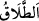
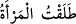
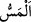

Mesnevî’de şöyle denilmiştir:
Her şey kendi cinsinden olana doğru yüzlerce kanatla uçar,
Ona ulaşma hayaliyle bağlarını yırtıp yürür.
Birisine hayırlı insanların sohbeti diken gibidir,
Şüphesiz o fâsıklara komşu olmuştur.
“Henüz zifâfa girmeden” yâni cinsî münâsebette bulunmadan “onları boşarsanız,”
yâni, cinsî münâsebet kurmadan ya da halvet-i sahîha vâki olmadan önce kadınlara talâk
verirseniz...
“__WORD__ın asıl anlamı, bağını çözüp serbest bırakmaktır. Sonra kadını serbest bıraktım,
artık o nikah bağından boştur anlamında istiâre olarak/mecâzen “__WORD__ denilmiştir.
Onu boşadım, o boştur, bağlı ve kayıtlı değildir denilir. boşadım sözü hep bunlardan
mecaz olarak kullanılmıştır. Kadını boşadım demek onu salıverdim, demektir.
“__WORD__ yâni dokunmak, cinsî münâsebetten kinâyedir.
“ (sonra)” kelimesinin faydası ise talâkın cinsî münâsebet olabilecek kadar geri
bırakılmasının nesebde tesiri olduğu gibi iddette de müessir olacağı vehmini ortadan
kaldırmaktır. Buna göre nikâha yakın bir zamanda boşamayla nikahtan uzun bir zaman
sonra boşama arasında hüküm bakımından fark yoktur. Âlimler, nikahtan önceki
boşamanın geçersiz olduğuna bunda delil olduğunu söylemişlerdir. Çünkü Allah Teâlâ
boşamayı nikahın ardından zikretmiştir. Nitekim bazıları “Nikah bir düğümdür, talak ise
o düğümü çözer. Henüz bağlanmamış olan bir düğüm nasıl çözülür?” demişlerdir.
Bir kimse “Falanca kadınla evlendiğim zaman ve evleneceğim her kadın boştur” dese,
İmam Şâfiî ve Ahmed b. Hanbel’e göre evlendiği zaman boşama meydana gelmez.
İmam Ebû Hanîfe ise mutlak olarak boşamanın meydana geleceğini söylemiştir. Çünkü
bu şartın bulunması durumunda bu bir boşamadır. Ancak kadını bir fuzûlî (yetkisi
olmadan başkası adına hukukî işlemde bulunan kimse) evlendirirse kadın boş olmaz.
Nitekim el-Muhît’ta böyle geçmektedir. İmam Mâlik ise şöyle der: Bu kişi bizzat bir
kadını, bir kabileyi veya bir beldeyi tâyin ederek bu sözü söylerse, sonra da tâyin ettiği
kadınla evlenirse boşama meydana gelir. Ancak hükmü geneller ve “İnsanların
tamamından benim nikahlayıp evleneceğim her kadın boştur.” derse, o kimseye hiç bir
şey lâzım gelmez.
Sonra cinsî münâsebetin mümkün olduğu halvet, Ebû Hanife ve arkadaşlarına göre
cinsî münâsebet hükmündedir. Halvet-i sahîha, iki tarafta da cinsi münâsebete bir mâni
olmaksızın kişinin nikahlı hanımı üzerine kapıyı kapatıp onunla yalnız kalmasıdır.
Cinsî münâsebetin mânileri üçtür:
1- Cinsî münâsebete mâni olacak bir hastalık veya cinsî münâsebetin mümkün
olmayacağı şekilde kadının uzvunun bitişik ve yapışık olması gibi fizikî mâni,
2- Ramazan orucu gibi şer’î mâni. Nâfile, kaza, adak ve keffaret oruçları ise böyle